-> unoffiziele Referenda 2009-2011 (nidriege Wahlbeteiligung)
-> Demonstrationen 11. September - Diada
-> 5. November 2012: Vorgezogene Neuwahl
-> 23. Januar 2013: „Erklärung der Souveranität“ - verbindliches Referendum vorgesehen.
-> 25. März 2014: Verfassungsgericht erklärt es null.
Mehr Info unter:
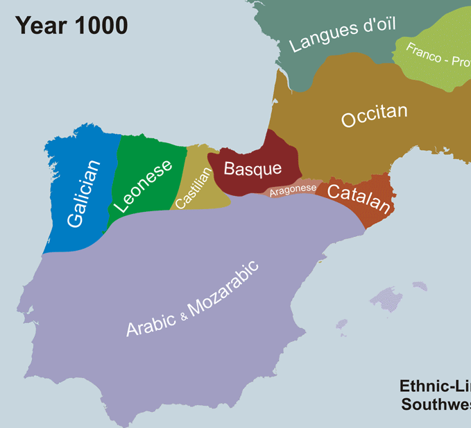
-> ab dem 15. Jhd durch die kastillianische Krone.
-> 1711 im Zuge des Erbfolgekriegs
-> ab 1939 im Zuge der Dikatur Franco’s
Vicente Zamora (1989) betrachtet nur als Dialekt weniger prominente Sprachen wie
-> Mozarabisch, Leonesisch, Aragonesisch
ODER
Übergangsdialekte wie bsw.
-> Extremadura-Dialekt: Übergang zwischen Leonesisch und Andalusisch
-> Murcia-Dialekt: Übergang zwischen Aragonesisch und Andalusisch mit katalonischen Merkmalen
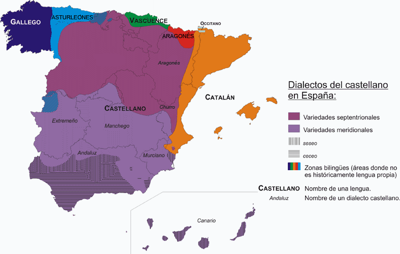
Die klare Antwort ist: Kontaktdialekt zwischen Kastillianisch mit Katalonischem Einfluss.
ABER
-> bis in die 90er Jahre selbst durch die Linguistik nicht als eigenständiger Dialekt betrachtet bzw. unerforscht.
-> Wirkung der franquistischen Sprachplanung (keine Einschulung in Catalan): weniger Salienz des Katalanischen Spanischen.
-> Bias: Wahrnehmung als gebrochenes L2-Spanisch. Kastillianisch wird als die korrekte Variante rationalisiert.
-> „Die katalanische Aussprache von Kastillianisch ist eine Verstellung der Diction“ Badia (1969)
-> Die Velarization von [l] „ist die Totsünde der Katalaner beim Spanisch Sprechen“ Marsá (1986)
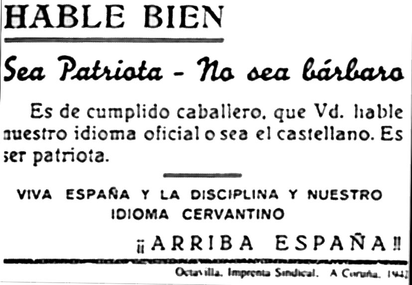
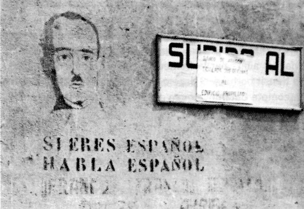
Der Umbruch mit dieser Situation vollzieht sich, in dem angenommen wird, dass Kataloner nicht Kastillianisch sondern Standard Spanisch sprechen.
Dazu Robert E. Vann (2002)
Alle Daten entstammen aus:
http://www.bcn.cat/estadistica/catala/ http://www20.gencat.cat/portal/site/Llengcat/
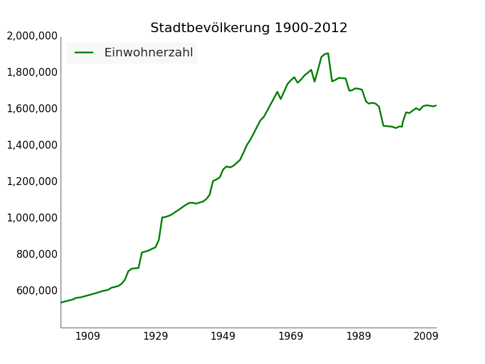
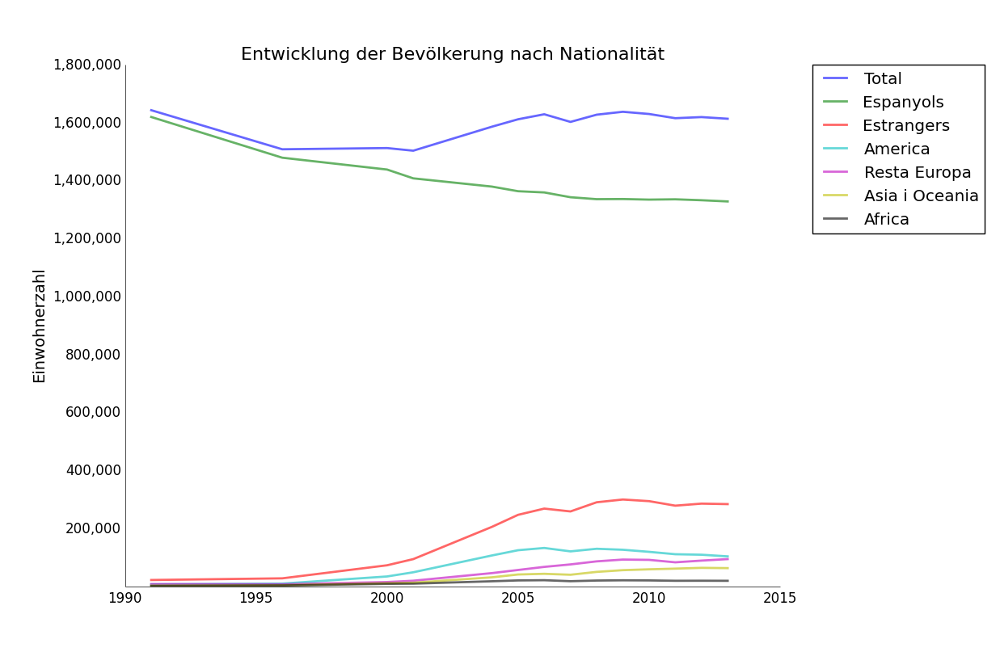
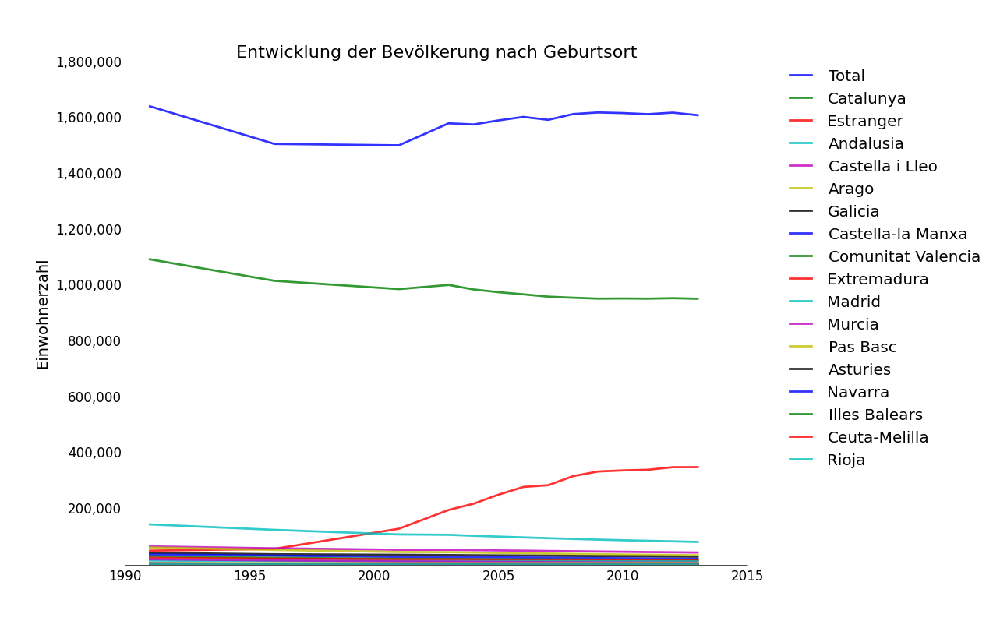
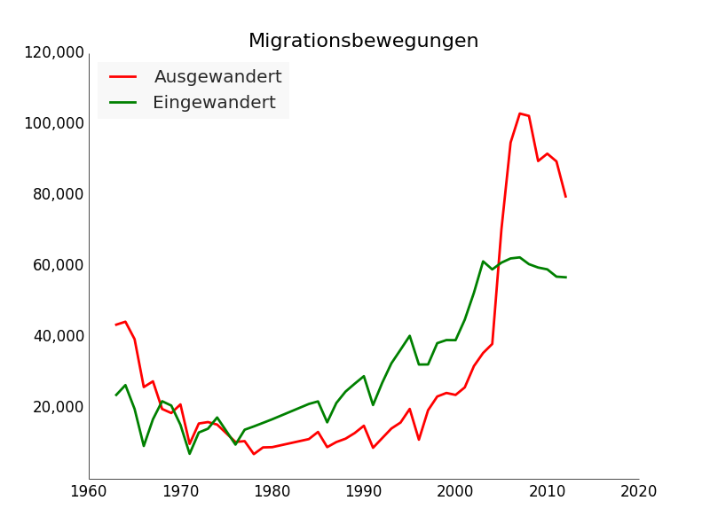
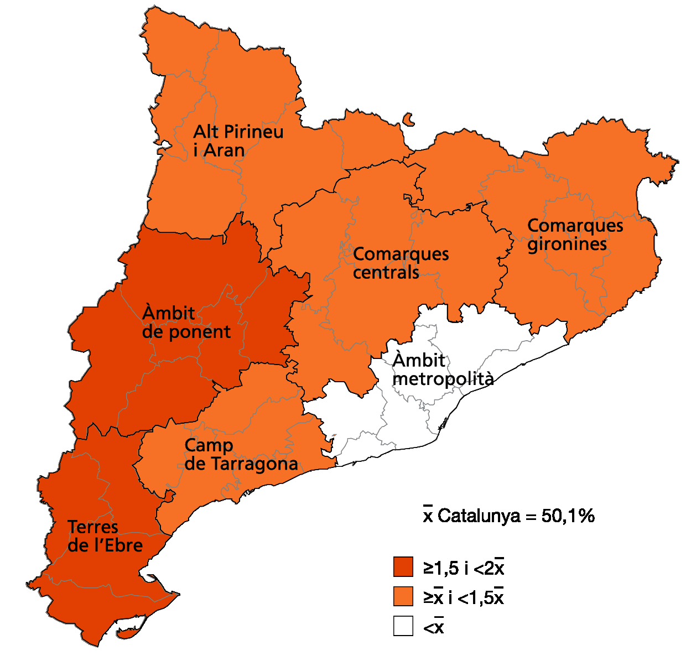
| Erstsprache | Identifikationssprache | meist verwendet | |
|---|---|---|---|
| Kastillianisch | 55.14 | 47.55 | 50.73 |
| Katalonisch | 31.02 | 36.38 | 36.29 |
| Beide | 2.44 | 7 | 6.82 |
| Arabisch | 2.43 | 2.11 | 1.26 |
| Englisch | 0.42 | 0.43 | 0.42 |
| Rumänisch | 0.9 | 0.71 | 0.39 |
| Berber Amazic | 0.67 | 0.53 | 0.39 |
| Russisch | 0.51 | 0.45 | 0.22 |
| Französisch | 0.62 | 0.44 | 0.2 |
| Portugieschisch | 0.42 | 0.31 | 0.1 |
| Italienisch | 0.47 | 0.38 | 0.07 |
| Galizisch | 0.53 | 0.2 | 0.04 |
| Aranesisch | 0.04 | 0.04 | 0.02 |
| NA | 0.8 | 0.48 | 0.32 |
| Andere | 3.14 | 2.99 | 2.73 |
| Total | 100 | 100 | 100 |
| Verwendungsbereich | nur cat | + cat | gleich | + es | nur es | andere | NA |
|---|---|---|---|---|---|---|---|
| Familienmitglied | 27 | 5 | 8 | 10 | 40 | 10 | 0 |
| Freundschaft | 15 | 16 | 16 | 13 | 31 | 9 | 0 |
| Nachbarschaft | 17 | 15 | 16 | 11 | 37 | 2 | 1 |
| Studium | 21 | 22 | 17 | 14 | 17 | 8 | 1 |
| Arbeit | 17 | 16 | 17 | 14 | 26 | 6 | 5 |
| Kleinhandel | 21 | 18 | 15 | 11 | 33 | 1 | 1 |
| Großhandel | 18 | 16 | 15 | 13 | 36 | 1 | 2 |
| Banken | 31 | 12 | 11 | 8 | 36 | 1 | 3 |
| regionale Verwaltung | 38 | 9 | 7 | 6 | 30 | 1 | 11 |
| staatliche Verwaltung | 22 | 13 | 11 | 10 | 37 | 1 | 6 |
| TOTAL | 2-14 | 15-24 | 25-39 | 40-64 | > 64 | |
| Verstehen | 95,1 | 95,4 | 96,5 | 94,5 | 96,3 | 93,2 |
| Sprechen | 74,6 | 74,0 | 89,2 | 81,3 | 72,6 | 62,6 |
| Lesen | 75,0 | 64,3 | 89,6 | 83,3 | 75,6 | 61,9 |
| Schreiben | 47,1 | 52,1 | 82,8 | 64,5 | 34,4 | 25,4 |
| Nicht verstehen | 4,9 | 4,6 | 3,5 | 5,5 | 3,7 | 6,8 |
| TOTAL | 1.466.763 | 147.710 | 170.052 | 355.347 | 473.156 | 320.498 |
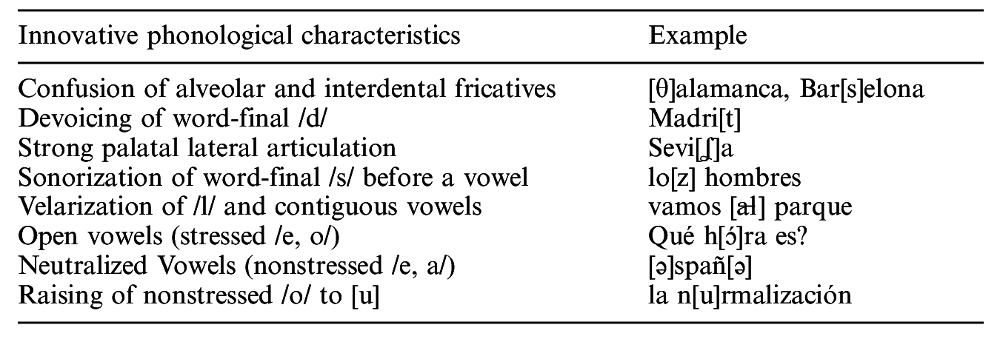
Robert E. Vann (2002)
| Spanish | Deutsch | |
| desenvolupar | desenrrollar | auswickeln |
| parlar | hablar | sprechen |
| espardeñas | alpargatas | Espadrilles |
| conversa | conversación | Gespräch |
| esplai | - | Pionier-zentrum |
-> „hacen valer los intereses comunes a todo el proletariado independientemente de la nacionalidad y que en las diferentes fases del desenvolupamiento“
-> „De ahí nos hemos ido Raquel y Jose con los nenes al esplai“
| Spanisch | Deutsch | |
| ahí hay | hay | es gibt |
| tiene a ver | tiene que ver | es hat zu tun mit… |
| cierra la luz | apaga la luz | mach das Licht aus |
| Spanisch | Deutsch | |
| respectar | respetar | respektieren |
| resta | resto | Rest |
| pero | - | aber (nachgestellt) |
| entonces | asi que | explikatives also |
-> „De España yo ten-, yo respecto mucho…“
-> „En la resta … en la, bueno, en el resto de España no se habla catalán.“
-> „Porque es una zona de inmigrantes, entonces hay […] gitanos.“
-> „Porque estamos en España, aunque no lo quiero aceptar, pero.“
-> pragmatic scope: „Die Aspekten, die in einem deiktischen System differenziert werden“
a) bzgl welchen Gesprächsteilnehmers ist die Deixis definiert? (Sprecher, Addresat, beide…)
b) wie viele Stufen von Deixis werden unterschieden (dies, jenes vs. este, ese, aquel)?
-> pragmatic scope von Deixis kann (dialektal, sprachenübergreifend) variieren.
| Spanisch | Catalanisch | |
| pragmatic scope | sprecherorientiert | schließt den Adressat gerne mit ein |
| Stufen | dreistufig | zweistufig |
| Spanisch | Catalanisch | |
| Bewegungsverben | ir/venir | anar/venir |
| transitive Bewegungsverben | llevar/traer | portar |
| Demonstrativpronomina | este/ese/aquel | aquest/aquell |
| Ortsadverbien | aquí/ahí/allí | aquí/allá |
-> es. ¡Ya voy! - (Bewegung weg vom Sprecher)
¡Ya-vengo! (Bewegung Richtung auf den Sprecher)
-> cat. Ja vinc
(‚venir‘ schließt den Adressat ein und wird deswegen hier verwendet)
Ja-vaig - (Bewegung weder zum Adressat noch zum Sprecher)
-> cat. es. ¡Ya vengo!
-> es. Ya te lo llevo a la oficina
Ya-te-lo-traigo-a-la-oficina
-> cat. Ja t’els porto al teu despatx
-> cat. es. Ya te los traigo a tu oficina
-> es. Me gusta este al lado mío, no ese al lado tuyo.
-> cat. M’agrada aquest al costat meu, no pas aquest al costat teu.
-> cat. es. Me gusta este al lado mío, no este al lado tuyo.
-> es. ¿Qué tal va todo allí en tu casa?.
-> cat. Com va aixó aquí a casa teva.
-> cat. es. ¿Qué tal va todo aquí en tu casa?.
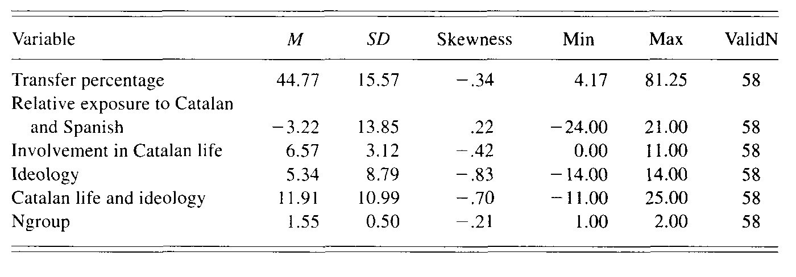
.images/correlation.jpg
| variablen | p-Wert |
|---|---|
| relative exposure | p < .00000 |
| cat life and ideology | p < .8513 |
| cat life (single variable) | p < .9506 |
| ideology (single variable) | p < .0001 |
-> politische Ideologie ist nur durch die Vermittlung einer dritten Variabel (exposure to catalan) mit dem Transfer korreliert.
warum wird pragmatischer Scope überhaupt übertragen?
-> „the use and interpretation of pragmatic referents are inherently inconsistent“
-> „language learners are often unaware that points of reference can vary subtly across languages“
lexicalische Reduktion, Demarkierung?
-> „[…] the role of pragmatic scope in the usage of motion verbs, demonstratives and locatives may be secondary in informational load to other, more primitive meanings.“
-> „the transfer associated with these words in Catalan Spanish is manifest as a reduction of lexical oppositions.
Fenster zur Sozioindexikalität
-> I submit that, wherever there is a difference in a pragmatic scope interpretation associated with reference in Catalan and Spanish, there will be potential permeability in pragmatic reference and thus potential for pragmatic transfer (for either language or the other). Of course, the realization of this potential may depend on various other linguistic or social factors.
-> Katalanisch wird als vehikulare Sprache in der Bildung, Verwaltung und in den Medien unterstützt.
-> katalanische Texte bekommen gesetzliche Gültigkeit.
-> untersagt die Segregation der Schüler nach linguistischen Kriterien.
-> vergibt vielen Maßnahmen der vorherigen Sprachpolitik echten Gesetzstatus.
-> führt Sprachtests für statliche Beamten in Katalonien ein.
-> weniger als 2% katalanische Einschulung im Jahr 1979 gegen 3/4 am Ende des 20 Jhd.
-> die Aufwertung von Katalanisch kann in diesem Zusammenhang mit Bourdieu verstanden werden als Folge der Offiziallisierung, Legitimisierung.
„schools instill recognition of linguistic and cultural authority by securing universal recognition of dominant linguistic and cultural forms“ (legitimation).
-> Vann (1999) analysiert Interviews mit BarceloneserInnen nach Sprachattituden und zeigt eine zunehmend kritische Haltung hierzu.
-> Insgesamt kann man Katalanisch als die Sprache mit dem höheren Status betrachten.
-> Katalanspanisch kann man als eine Varietät höheren Prestiges verstehen, die den Sprecher als Sprecher des Katalansichen charakterisiert.
-> Die meisten Merkmalen dieser Varietät kann man im Prinzip durch Transfer erklären.
-> Dennoch handelt es sich bei vielen Merkmalen auch um Demarkierungen oder Simplifizierungen (z.B. das Deiktische System), die sich als Folge urbaner Prozesse interpretieren lassen können.
Vielen Dank für die Aufmerksamkeit!